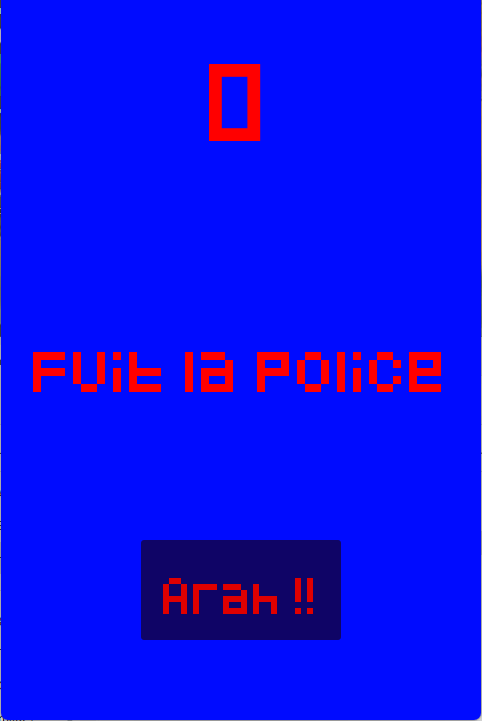
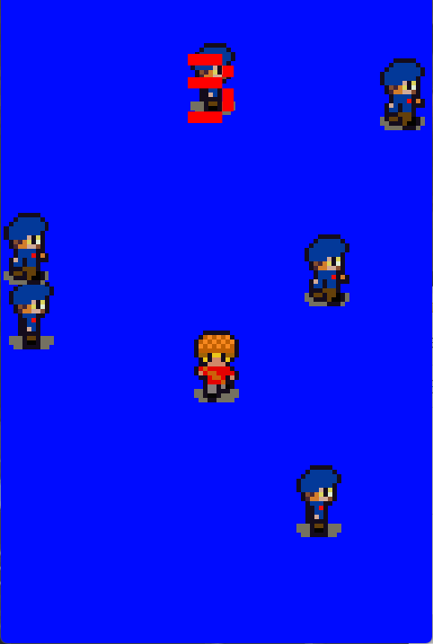
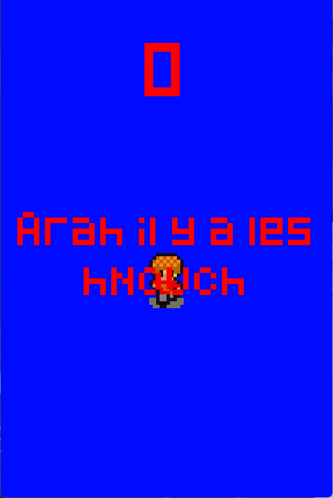

Le premier jeu créé est "Arah". Créé en mars 2025, ce jeu est un jeu de réflexe.
Un draré de Bruxelles doit fuir la police le plus longtemps possible.
C'est à vous de battre le record !
Ce jeu est en format pixel.
Il se joue sur PC avec les touches ZQSD ou les flèches.
Pour télécharger le jeu, cliquez sur le bouton "Télécharger le jeu Arah.game".
Une fois le dossier ZIP installé, décompressez-le et lancez l'application "Arah Game".
Images du jeux



Commentaire
Si vous avez un commentaire sur le jeu Arah allez à la page Laissez_un_commentaire et complètez le formulaire.